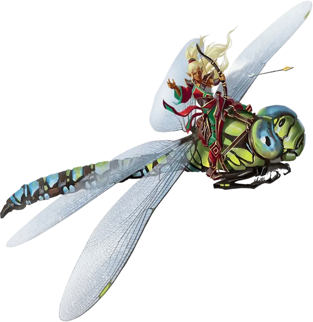

Гигантская стрекоза
Giant Dragonfly
Большой Зверь, без мировоззрения

Класс Доспеха 16 (природный доспех)
Хиты 22 (4к10)
Скорость 10 футов, летая 60 футов
| мод | спас | ||
|---|---|---|---|
| СИЛ | 15 | +2 | +2 |
| ЛОВ | 18 | +4 | +4 |
| ТЕЛ | 11 | +0 | +0 |
| мод | спас | ||
|---|---|---|---|
| ИНТ | 3 | −4 | −4 |
| МДР | 10 | +0 | +0 |
| ХАР | 3 | −4 | −4 |
Чувства пассивное Восприятие 10
Опасность 1/2 (100 опыта)
Бонус мастерства +2
Особенности
Жужжание. Когда стрекоза машет крыльями, она издает громкое жужжание, которое может быть услышано на расстоянии до 120 футов.
Действия
Укус. . Рукопашная атака оружием: +6 к попаданию, досягаемость 5 фт., одна цель. Попадание: 6 (1к4 + 4) колющего урона.
Реакции
Невероятное уклонение. Стрекоза получает половину урона от направленных на неё атак, если она может видеть атакующего.
Описание
Размах крыльев гигантской стрекозы составляет 20 футов. Она громко жужжит, когда летает или парит в воздухе, в поисках еды в виде маленьких насекомых.